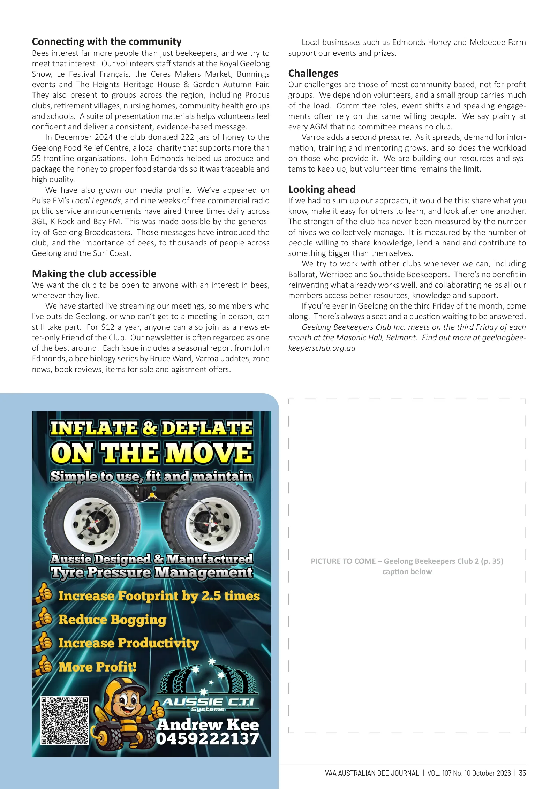

VAA AUSTRALIAN BEE JOURNAL | VOL. 107 No. 10 October 2026 | 35
Connecting with the community
Bees interest far more people than just beekeepers, and we try to
meet that interest. Our volunteers staff stands at the Royal Geelong
Show, Le Festival Français, the Ceres Makers Market, Bunnings
events and The Heights Heritage House & Garden Autumn Fair.
They also present to groups across the region, including Probus
clubs, retirement villages, nursing homes, community health groups
and schools. A suite of presentation materials helps volunteers feel
confident and deliver a consistent, evidence-based message.
In December 2024 the club donated 222 jars of honey to the
Geelong Food Relief Centre, a local charity that supports more than
55 frontline organisations. John Edmonds helped us produce and
package the honey to proper food standards so it was traceable and
high quality.
We have also grown our media profile. We’ve appeared on
Pulse FM’s Local Legends, and nine weeks of free commercial radio
public service announcements have aired three times daily across
3GL, K-Rock and Bay FM. This was made possible by the generos-
ity of Geelong Broadcasters. Those messages have introduced the
club, and the importance of bees, to thousands of people across
Geelong and the Surf Coast.
Making the club accessible
We want the club to be open to anyone with an interest in bees,
wherever they live.
We have started live streaming our meetings, so members who
live outside Geelong, or who can’t get to a meeting in person, can
still take part. For $12 a year, anyone can also join as a newslet-
ter-only Friend of the Club. Our newsletter is often regarded as one
of the best around. Each issue includes a seasonal report from John
Edmonds, a bee biology series by Bruce Ward, Varroa updates, zone
news, book reviews, items for sale and agistment offers.
Local businesses such as Edmonds Honey and Meleebee Farm
support our events and prizes.
Challenges
Our challenges are those of most community-based, not-for-profit
groups. We depend on volunteers, and a small group carries much
of the load. Committee roles, event shifts and speaking engage-
ments often rely on the same willing people. We say plainly at
every AGM that no committee means no club.
Varroa adds a second pressure. As it spreads, demand for infor-
mation, training and mentoring grows, and so does the workload
on those who provide it. We are building our resources and sys-
tems to keep up, but volunteer time remains the limit.
Looking ahead
If we had to sum up our approach, it would be this: share what you
know, make it easy for others to learn, and look after one another.
The strength of the club has never been measured by the number
of hives we collectively manage. It is measured by the number of
people willing to share knowledge, lend a hand and contribute to
something bigger than themselves.
We try to work with other clubs whenever we can, including
Ballarat, Werribee and Southside Beekeepers. There’s no benefit in
reinventing what already works well, and collaborating helps all our
members access better resources, knowledge and support.
If you’re ever in Geelong on the third Friday of the month, come
along. There’s always a seat and a question waiting to be answered.
Geelong Beekeepers Club Inc. meets on the third Friday of each
month at the Masonic Hall, Belmont. Find out more at geelongbee-
keepersclub.org.au
PICTURE TO COME – Geelong Beekeepers Club 2 (p. 35)
caption below